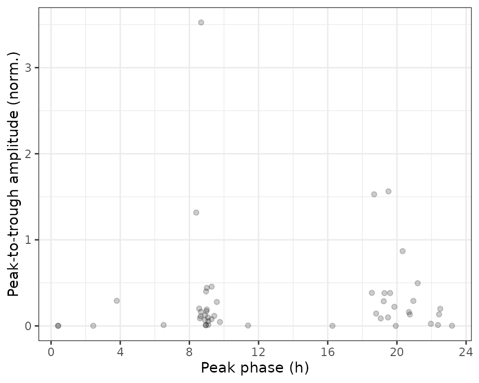
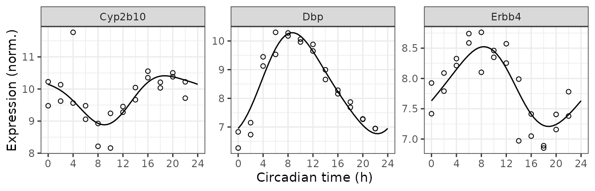

Here we show how to use limorhyde2 to quantify rhythmicity in data from one condition. The data are based on mouse liver samples from the circadian gene expression atlas in mammals (GSE54650).
library('data.table')
library('ggplot2')
library('limorhyde2')
library('qs')
# doParallel::registerDoParallel() # register a parallel backend to minimize runtime
theme_set(theme_bw())The expression data are in a matrix with one row per gene and one column per sample. The metadata are in a table with one row per sample. To save time and space, the expression data include only a subset of genes.
y = GSE54650$y
y[1:5, 1:5]
#> GSM1321182 GSM1321183 GSM1321184 GSM1321185 GSM1321186
#> 13088 10.209968 10.503358 9.714828 9.477728 10.134381
#> 13170 7.871989 7.281691 6.946495 6.266409 7.150140
#> 13869 6.851685 7.406234 7.781294 7.924764 8.089538
#> 100009600 5.055931 5.199767 5.121511 5.155912 5.219873
#> 100418030 6.174130 6.547075 6.521593 6.413817 6.451957
metadata = GSE54650$metadata
metadata
#> sample tissue time
#> 1: GSM1321182 liver 18
#> 2: GSM1321183 liver 20
#> 3: GSM1321184 liver 22
#> 4: GSM1321185 liver 24
#> 5: GSM1321186 liver 26
#> 6: GSM1321187 liver 28
#> 7: GSM1321188 liver 30
#> 8: GSM1321189 liver 32
#> 9: GSM1321190 liver 34
#> 10: GSM1321191 liver 36
#> 11: GSM1321192 liver 38
#> 12: GSM1321193 liver 40
#> 13: GSM1321194 liver 42
#> 14: GSM1321195 liver 44
#> 15: GSM1321196 liver 46
#> 16: GSM1321197 liver 48
#> 17: GSM1321198 liver 50
#> 18: GSM1321199 liver 52
#> 19: GSM1321200 liver 54
#> 20: GSM1321201 liver 56
#> 21: GSM1321202 liver 58
#> 22: GSM1321203 liver 60
#> 23: GSM1321204 liver 62
#> 24: GSM1321205 liver 64
#> sample tissue timeThe first step is to fit a series of linear models based on periodic splines for each genomic feature, in this case each gene, using limma. getModelFit() takes several arguments besides the expression data and metadata, but here we just use the defaults. For example, the data are from one condition, so we leave condColname as NULL. Also, the expression data are from microarrays and already log-transformed, so we leave method as 'trend'.
fit = getModelFit(y, metadata)The next step is obtain posterior estimates of the model coefficients using multivariate adaptive shrinkage (mashr), which learns patterns in the data and accounts for noise in the original fits.
fit = getPosteriorFit(fit)We can now use the posterior fits to compute rhythm statistics, i.e. properties of the curve, for each gene.
rhyStats = getRhythmStats(fit)We can examine the distributions of the statistics in various ways, such as ranking genes by peak-to-trough amplitude (no p-values necessary) or plotting peak-to-trough amplitude vs. peak phase.
print(rhyStats[order(-peak_trough_amp)], nrows = 10L)
#> feature peak_phase peak_value trough_phase trough_value peak_trough_amp
#> 1: 13170 8.1935432 10.402785 23.083237 6.646895 3.7558902049
#> 2: 13088 17.3125618 10.537264 9.237815 8.674852 1.8624115294
#> 3: 266645 18.3447383 9.775430 8.906014 8.153673 1.6217570599
#> 4: 13869 8.7168031 8.585007 18.044704 7.192154 1.3928531097
#> 5: 68396 19.2644734 9.639321 8.736966 8.771817 0.8675034661
#> ---
#> 46: 14616 23.6961643 5.422345 6.683518 5.418776 0.0035688775
#> 47: 18994 14.2784936 5.601345 22.177204 5.599508 0.0018374833
#> 48: 100009600 2.1265901 5.126086 9.417707 5.124330 0.0017555339
#> 49: 12613 0.6076071 5.049669 8.810137 5.048225 0.0014443188
#> 50: 115485688 19.7468356 4.235779 1.518992 4.235585 0.0001938504
#> mesor
#> 1: 8.478881
#> 2: 9.761782
#> 3: 9.092473
#> 4: 7.853253
#> 5: 9.283822
#> ---
#> 46: 5.420228
#> 47: 5.600595
#> 48: 5.125045
#> 49: 5.048962
#> 50: 4.235683
ggplot(rhyStats) +
geom_point(aes(x = peak_phase, y = peak_trough_amp), alpha = 0.2) +
xlab('Peak phase (h)') +
ylab('Peak-to-trough amplitude (norm.)') +
scale_x_continuous(breaks = seq(0, 24, 4))
We can also compute the expected measurements for one or more genes at one or more time-points, which correspond to the fitted curves. Here we plot the posterior fits and observed expression for three of the top rhythmic genes (converting from gene id to gene symbol).
genes = data.table(
id = c('13088', '13170', '13869'),
symbol = c('Cyp2b10', 'Dbp', 'Erbb4'))
measFit = getExpectedMeas(fit, times = seq(0, 24, 0.5), features = genes$id)
measFit[genes, symbol := i.symbol, on = .(feature = id)]
print(measFit, nrows = 10L)
#> time feature value symbol
#> 1: 0.0 13088 10.048449 Cyp2b10
#> 2: 0.0 13170 6.726346 Dbp
#> 3: 0.0 13869 7.655222 Erbb4
#> 4: 0.5 13088 10.057168 Cyp2b10
#> 5: 0.5 13170 6.841706 Dbp
#> ---
#> 143: 23.5 13170 6.662765 Dbp
#> 144: 23.5 13869 7.611846 Erbb4
#> 145: 24.0 13088 10.048449 Cyp2b10
#> 146: 24.0 13170 6.726346 Dbp
#> 147: 24.0 13869 7.655222 Erbb4Next we combine the observed expression data and metadata. The curves show how limorhyde2 is able to fit non-sinusoidal rhythms.
measObs = mergeMeasMeta(y, metadata, features = genes$id)
measObs[genes, symbol := i.symbol, on = .(feature = id)]
print(measObs, nrows = 10L)
#> sample tissue time feature meas symbol
#> 1: GSM1321182 liver 18 13088 10.209968 Cyp2b10
#> 2: GSM1321182 liver 18 13170 7.871989 Dbp
#> 3: GSM1321182 liver 18 13869 6.851685 Erbb4
#> 4: GSM1321183 liver 20 13088 10.503358 Cyp2b10
#> 5: GSM1321183 liver 20 13170 7.281691 Dbp
#> ---
#> 68: GSM1321204 liver 62 13170 8.656560 Dbp
#> 69: GSM1321204 liver 62 13869 6.970524 Erbb4
#> 70: GSM1321205 liver 64 13088 10.352095 Cyp2b10
#> 71: GSM1321205 liver 64 13170 8.157525 Dbp
#> 72: GSM1321205 liver 64 13869 7.048457 Erbb4
ggplot() +
facet_wrap(vars(symbol), scales = 'free_y', nrow = 1) +
geom_line(aes(x = time, y = value), data = measFit) +
geom_point(aes(x = time %% 24, y = meas), shape = 21, size = 1.5,
data = measObs) +
labs(x = 'Circadian time (h)', y = 'Expression (norm.)') +
scale_x_continuous(breaks = seq(0, 24, 4))